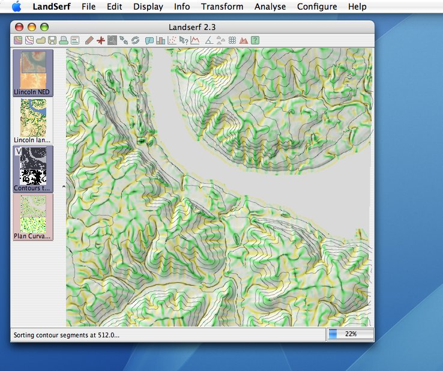

MacOS X users have the option of using LandSerf with the native 'Aqua' look and feel. You may
find this useful if you are used to having a menu bar at the top of the screen as well as the
standard window fonts, buttons, sliders etc.
To set the Aqua look and feel, select the Configure->Native GUI. The new look
and feel will appear next time you start LandSerf. If you would rather the standard LandSerf
look, you can toggle this back again with the same menu option.

LandSerf layout using native Aqua look and feel on MacOS X.